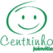
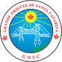
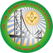

Reforma do PROFIS em Joinville se aproxima com apoio do Salah Shriners
Visita técnica avalia condições do Centro de Convivência e define próximos passos para reforma viabilizada com recursos do Paddle Solidário.
Ser Shriner também é celebrar a vida. Com mais de 7.000 clubes e unidades em todo o mundo, os Shriners oferecem inúmeras oportunidades de companheirismo, diversão e participação em atividades que fortalecem nossos laços de amizade.
Os Hospitais Shriners oferecem cuidados pediátricos especializados, viabilizando tratamento de excelência para crianças independentemente da capacidade financeira das famílias.
Somos uma grande família, e nosso amor fraternal manifesta-se em nossos eventos, programas e no cuidado dedicado a cada membro e a seus entes queridos.
Uma fraternidade formada por homens comprometidos com valores como amizade, solidariedade e serviço ao próximo. Somos uma entidade autônoma, sem fins lucrativos, de caráter filantrópico, assistencial, recreativo e cultural.

Viabilizar meios para que crianças e adolescentes de até 18 anos recebam tratamento médico especializado com agilidade, segurança e qualidade, independentemente de sua condição financeira.
Estamos presentes em mais de 40 países, com cerca de 200 templos e milhares de clubes ao redor do mundo, unidos pelos princípios de fraternidade, filantropia e serviço à humanidade.
Toda a nossa atuação é orientada pela causa filantrópica, sem qualquer interesse comercial. Cada contribuição recebida é destinada diretamente ao cuidado e ao tratamento das crianças atendidas.
O Salah Shriners é uma fraternidade formada por homens comprometidos com valores como amizade, solidariedade e serviço ao próximo. É uma entidade autônoma, sem fins lucrativos, de caráter filantrópico. Estamos presentes em mais de 40 países, com cerca de 200 templos e milhares de clubes ao redor do mundo.
Para encaminhar algum caso, entre em contato através do formulário ou pelo e-mail secretario@salahshriners.org.
Criado em 1922, o Shriners Children's é um sistema de saúde pediátrica de referência mundial, com unidades permanentes em três países, clínicas de extensão e telessaúde. Atende crianças de até 18 anos que necessitam de tratamento especializado, sem custo para as famílias.
Para se tornar um Shriner, acesse Seja um Shriner ou envie um e-mail para secretario@salahshriners.org.
Você pode fazer uma doação via PIX (Chave CNPJ: 33.658.326/0001-60) ou depósito em conta no Banco Ailos (085), Ag. 0107-4, Conta 5986-2, em nome de SHRINERS CLUB INTERNATIONAL DE SANTA CATARINA. Toda contribuição é bem-vinda!
O Salah Shriners tem sede e jurisdição em Santa Catarina, porém sua atuação filantrópica transcende fronteiras, pois integra uma fraternidade global presente em diversos países, com foco no encaminhamento de crianças para atendimento nos Hospitais Infantis Shriners.
Somos homens compartilhando o melhor da vida. A diversão é a base que nos une, e a filantropia fortalece nosso companheirismo. Fraternidade, família, alegria, compaixão e serviço ao próximo são os pilares da nossa jornada.
Salah Shriners
Potentado

Chefe Raban

Raban Assistente

Sumo Sacerdote e Profeta

Guia Oriental

Tesoureiro

Secretário
Organizações e instituições que compartilham nossa missão de transformar vidas.

Centrinho Joinville Profis Joinville Junior Achievement Brasil Unochapecó Uniplac Bodes do Asfalto Grande Loja de Santa Catarina
Grande Oriente de Santa Catarina
Grande Oriente do Brasil – SC
Visita técnica avalia condições do Centro de Convivência e define próximos passos para reforma viabilizada com recursos do Paddle Solidário.

Tarde de integração em Florianópolis reuniu cerca de 50 Nobres para seminários, formação e a cerimônia oficial de posse da gestão 2026.

Acordo celebrado em Itajaí prevê ações integradas em apoio às causas filantrópicas voltadas às crianças em Santa Catarina.
Tem alguma dúvida, deseja encaminhar um caso ou quer saber mais sobre os Shriners? Entre em contato.
Cada contribuição vai diretamente para o atendimento de crianças que precisam de cuidados médicos especializados, sem custo para as famílias.
Faça sua doação via PIX:
As doações poderão ser depositadas na seguinte conta:
Dúvidas sobre doações? secretario@salahshriners.org
11 publicações · de Dez 2025 a Mar 2026

Tarde de integração em Florianópolis reuniu cerca de 50 Nobres para seminários, formação e a cerimônia oficial de posse da gestão 2026.
Acordo celebrado em Itajaí prevê ações integradas em apoio às causas filantrópicas voltadas às crianças em Santa Catarina.

Convênio formalizado em Lages fortalece a estratégia de ampliar o acesso de crianças catarinenses a tratamentos no exterior.

Convênio voltado a casos de queimaduras graves, deformidades ortopédicas, lesões na coluna e fissura labiopalatina.

Programação especial reuniu os Nobres em um dia inteiro com seminário dinâmico e a cerimônia oficial de posse do novo Divan.

Nova plataforma digital centraliza processos, amplia a organização interna e facilita a interação com os Nobres.

Representantes visitaram a sede do Grande Oriente de Santa Catarina para fortalecer o relacionamento e alinhar planos de trabalho.

Parceria prevê ações conjuntas ao longo do ano, incluindo eventos, palestras e iniciativas em prol da missão filantrópica.

Renovação confirmada após visita ao HIJG, onde foram acompanhados os recursos doados em 2025 em benefício das crianças.

Reunião estratégica estreitou relações e alinhou processos para o encaminhamento de pacientes brasileiros aos hospitais nos EUA.

Festas de Encerramento pelo estado marcam o fechamento de um ano intenso, produtivo e alinhado à missão da fraternidade.